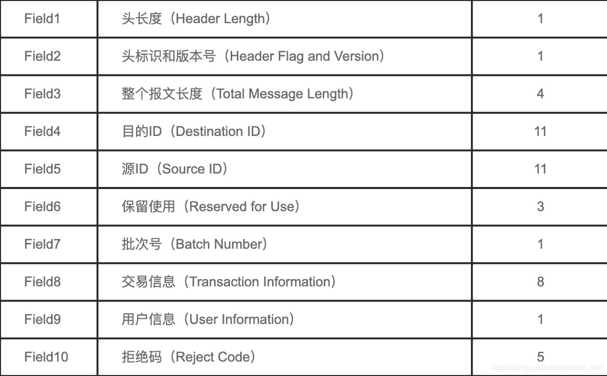
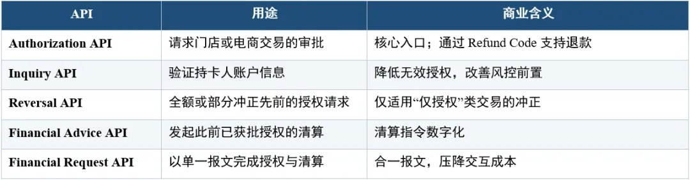
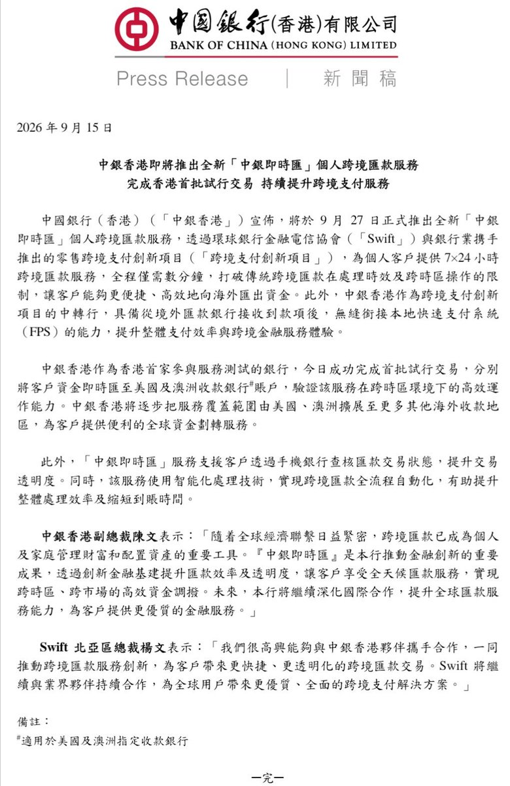
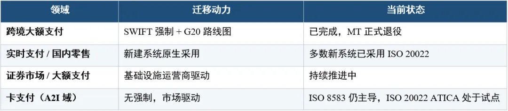
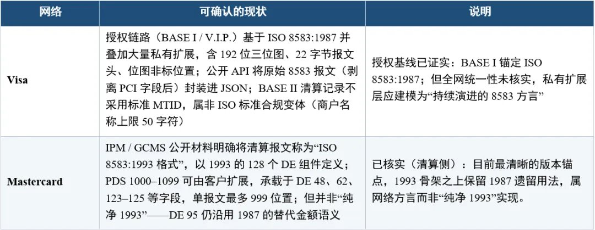

ISO 8583 是由国际标准化组织（ISO）制定的金融交易卡电文交换规范，主要用于规定银行卡、信用卡和借记卡在交易终端（如 POS 机、ATM 机）与发卡行或支付网关之间进行通信时的报文格式。
全球每天数十亿笔银行卡交易，主体仍运行在1987年定型的ISO 8583之上。ISO 20022中的ATICA（Acquirer to Issuer Card Messages，收单方至发卡方卡报文）被设计为这一领域的继任语义，覆盖授权、查询、清算与报表等与8583对位的业务功能；但与跨境支付不同，卡域至今没有方案层面的强制切换时点，授权主干大多仍是8583方言。说“正在被替代”，更准确的表述是：替代标准已经就位，规模迁移尚未发生。
账户与批发支付一侧的主干改造则基本收官。2025年11月，SWIFT结束MT与ISO 20022（MX）共存期；切换当周，逾97%的跨境支付指令已按ISO 20022发送，MT103、MT202等经典报文退出支付指令主路径。此后各国实时支付系统在新建时即原生采用该标准，证券市场与大额支付系统陆续跟进。全球金融报文的“主干道”由此从强制迁移阶段转入版本演进与数据质量阶段——结构化地址等后续要求仍在调整时间表，但报文语法本身已不再是问题。
中银香港将于2026年9月27日推出的「中银即时汇」，正是主干道改造落地后的零售产品形态。该服务接入SWIFT与银行业合作的零售跨境支付创新安排，面向个人客户提供7×24小时汇款，自称自汇出行发报到收款行入账最快可达数分钟，并可追踪全流程。该行作为中转行，可将境外汇入与香港快速支付系统（FPS）衔接；首批试行已打通美国与澳大利亚收款账户，后续拟扩至更多地区。它证明的是账户支付侧的即时化，并不能替代出境场景中Visa、万事达卡网络的覆盖。
然而，在这条已基本贯通的主干道旁，卡支付仍是一块刻意保留的孤岛。全球每天数十亿笔银行卡交易，授权与清算的主体报文依旧写在1987年定型的ISO 8583之上。ISO 20022虽已为卡域预备了ATICA（Acquirer to Issuer Card Messages，收单方至发卡方卡报文），覆盖与8583对位的授权、查询、清算与报表功能，却始终没有方案级强制时点，也没有全网切换日。近日，万事达卡在Mastercard Developers上线面向全球收单方及收单处理机构的Transaction APIs试点，底层正是这一ATICA语义。接口先于强制出现，本身就值得单独成篇。
真正需要追问的不是标准是否“更新”，而是时机与账单。在既无监管命令、又无全网deadline、行业测算中即便乐观情形投资回收亦以十年计的领域，国际卡组织为何选择此时把ISO 20022做成可接的产品面？谁来承担改造成本？存量授权轨的沉没投入、增量接口的获客逻辑，以及网络对下一代数据模型的卡位，如何合成一笔算得过来的账？
下文按六步展开。首先厘清卡支付在ISO 20022版图中的特殊位置，并对照Visa与万事达卡各自的落地现状；其次解剖Transaction APIs的产品形态与接入边界；再从成本、存量、增量与战略四个维度拆解商业动因；继而以位号级数据元对照，说明迁移的真实技术难度——难的往往不是XML/JSON外壳，而是私有域与业务语义的不对齐；同时辨析生态内的收益分配、现实约束与风险；最后落到国内产业条件，给出可操作的启示与边界清晰的展望。
ISO 20022
监管与技术设置迁移
过去十余年，ISO 20022在全球支付与金融市场基础设施中的推进，呈现出一条相当清晰的主线：由监管要求与关键基础设施运营商共同驱动的强制性迁移，而非市场自发选择。
SWIFT为跨境支付设定了明确的共存期与最终切换时点，并于2025年11月结束MT与ISO 20022的并行安排，使后者成为跨境支付指令的事实上强制标准。与此同时，各国在新建实时支付系统（RTP/IPS）时，普遍从一开始即采用ISO 20022，而非在旧报文体系上做增量改造。大额支付系统（RTGS）、证券结算等核心市场基础设施亦陆续跟进，形成由跨境通道向外围国内系统扩散的格局。
挪威央行是这一路径的典型样本。2025年3月，其结算系统NBO率先完成总额支付（gross payments）的ISO 20022切换；随后扩展至证券结算，并于同年11月将净额支付纳入新标准。切换在与参与机构协同、并同步北欧邻国系统的前提下完成，上线后运行保持稳定。这一案例说明：当央行作为系统运营商同时承担监管与基础设施职责时，合规时间表本身即构成最强迁移激励。
在这一模式下，合规压力始终是第一推动力。丰富数据、直通处理与跨境互操作性等长期收益，往往要在强制切换完成之后，才逐步转化为机构层面的业务价值。
市场推广普及程度
卡支付领域的逻辑则截然不同。监管与基础设施运营商可以在大额支付、跨境报文和新建实时系统中强行划定切换时点；卡组织面对的却是一套已经运行数十年、以毫秒级授权吞吐为核心的既有网络。欧洲卡利益相关方组织（ECSG，当时作为ERPB框架下的Cards Stakeholders Group）对账户到工具（A2I）处理路径的研究给出了相当冷静的结论：即便强制全行业迁往统一报文标准，在最乐观的高收益假设下，ISO 20022路径的投资回收期仍长达约十八年，统一ISO 8583方言本身也需十一年量级。换言之，强制迁移在卡域几乎构不成可辩护的商业案例。
Visa在《Decoding ISO 20022》白皮书中把这一点说得更直白：目前并不存在令人信服的商业理由，去推动覆盖整个金融服务业、尤其是零售卡生态的wholesale转型。卡交易的产品形态、实时授权约束、安全与争议处理路径，与大额或账户支付并不相同；把“一种报文打天下”套到卡域，成本往往先于收益出现。由此形成的市场格局也因此与跨境支付相反——交易量最大的卡支付，反而成为ISO 20022渗透最浅的“未开垦地带”。这一反直觉事实，构成理解万事达卡后续动作的起点。
孤岛并非免费。ISO 8583在名义上是共同骨架，各网络却在私有域、子字段和扩展规则上持续分叉。金融机构每年需投入大量工时，将同一业务意图在不同网络的8583方言之间重新映射；任一网络调整扩展字段，发卡与收单侧的集成都可能失效。这笔支出很少出现在迁移项目的ROI表里，却被长期默认为营业成本。正是这种“标准其名、方言其实”的摩擦，使卡域在强制迁移缺位时，既难以整体转向ISO 20022，也难以真正享受统一数据模型的规模收益。
同一ISO机制不同
要评估迁移难度，须先拆开一个常被混为一谈的层次：ISO公布的标准版本，与国际卡组织线上跑的运行方言，并不是同一套东西。8583给出的是位图、数据元编号与长度类型的骨架；真正决定一笔授权能否被对端完整理解的，是Visa BASE I/BASE II、万事达卡IPM/GCMS各自的字段裁剪、私有域编码与丢弃规则。公开资料显示，两大网络在这一层上的差异已经大到足以单独成表。
揭示的不只是“字段多少”的清单差，而是保真机制的差。万事达卡GCMS对数据完整性影响最大的一条规则是：当某数据元或PDS因MTI与DE 24（功能码）组合不被支持、或未纳入该报文的全局定义时，系统可在已接收报文中将其静默丢弃——不报错、不回执。发送方仍以为字段已送达，接收方账本里却从未出现。Visa一侧虽未见对等的公开丢弃条款，BASE II清算字段同样存在容量上限与截断：超长或未映射的附加信息会在结算文件中被削短或落空。两端的表现不同，指向的判断却相同——端到端数据保真并不由ISO文本担保，而取决于逐方案、逐报文类型的约定。
由此可先下一句冷判断：从8583迁到ATICA，表面是语法升级，实质是把多年来写进私有域与静默规则里的业务语义，重新变成可校验、可拒绝、可对账的显式数据元。难度不在XML或API外壳，而在这些被方言吞掉的位号。
万事达的答卷
万事达的架构是五个API与一条云链路，Transaction APIs。
定位并不含糊：用遵循ISO 20022 ATICA语义的API，替代收单机构通往万事达卡核心支付网络的传统报文接口。链路是典型的三段云路径——收单方发起API请求，网络侧完成校验与路由，发卡方处理后沿原路回传。支付报文不再默认经过本地MIP或边缘设备，而是走万事达卡提供的云连接（cloud connectivity）。对收单处理机构而言，这意味着接入面从“专线加8583方言”变成“证书、API与ATICA数据模型”。
官方将产品拆为五类核心用例，覆盖授权、查询、冲正、金融清算等卡交易生命周期节点。
同时明确支持卡在场（card present）、卡不在场（card not present）及令牌（token）交易，使用主体为收单方及收单处理机构，地域范围标为全球。
有一条限定比功能清单更重要。官方表述是“目前面向全球收单客户开放试点”（currently available to be piloted by acquiring customers globally）——既不是强制切轨，也不是全量商用。试点意味着接口已经可接、规则尚未收口、规模效应仍待验证。后文关于成本分担、存量沉没与战略卡位的全部推论，都要从这一句非强制的措辞起算。
https://t.co/WUCPDsGwRz
Article attached to this post
银行卡报文换代：ISO 8583要落幕了吗




